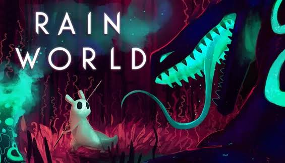

Outras Páginas
Regiões
Objetos

Suporte

Rain World é um jogo de plataforma de sobrevivência baseado em física, ambientado em um mundo há muito abandonado, dominado por criaturas fascinantes e temíveis. Chuvas torrenciais e esmagadoras caem regularmente, inundando as ruínas de civilizações antigas e tornando a vida como a conhecemos quase impossível. As criaturas deste mundo hibernam na maior parte do tempo, mas precisam se aventurar durante os períodos de seca para encontrar comida e sobreviver mais um dia. Você é um Slugcat nômade solitário , predador e presa ao mesmo tempo. Separado de sua família, você se encontra sozinho, tendo apenas um estranho companheiro amarelo como guia. Explore, encontre comida para sobreviver e evite as ameaças constantes do ambiente implacável e dos perigosos predadores que espreitam por toda a região. Belo em seu design, mas desafiador em sua dificuldade, Rain World apresenta uma grande variedade de ambientes e habitantes para explorar e descobrir. As animações procedurais baseadas em física e a inteligência artificial avançada de Rain World trazem uma impressionante sensação de vida ao mundo e proporcionam um desafio interessante enquanto o jogador busca explorar o mundo e desvendar seus segredos.